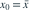
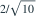
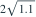
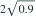

经典正态一元线性回归含截距，样本量为 10，残差标准差估计为 。在

处预测一个独立的新观测值，预测误差的估计标准差为哪项？- A

- B

- C

- D

我已思考，展开答案与解析
正确答案：B
- 新观测预测标准误为 。
- 当 时，第三项为 0，所以结果为 。
易错提醒预测单个新观测比估计条件均值多一个误差方差项。
原模拟卷 A · 模拟卷 A 第 46 题
原创

处预测一个独立的新观测值，预测误差的估计标准差为哪项？


原模拟卷 A · 模拟卷 A 第 46 题
原创